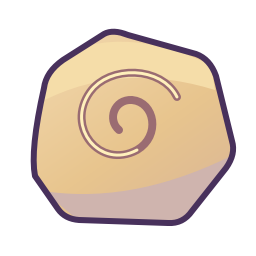
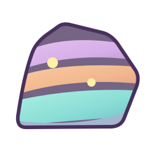
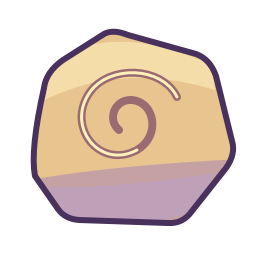
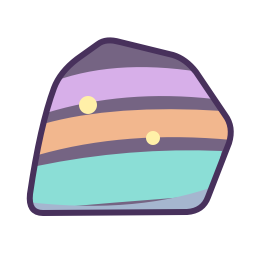
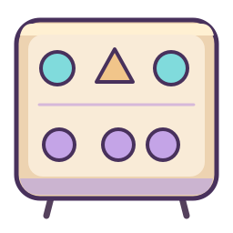
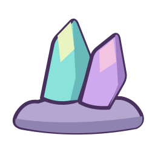
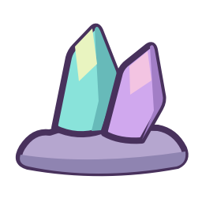

VECTOR-REFINEMENT-GEOLOGIST_FOSSIL_V2

Source 4.5/5 · attempt 2 · mounted/action pending
Warm clay values now keep the fossil as one rounded stone instead of stacked purple color stripes. The shallow large spiral remains intact, the restrained bottom shadow and clear contour support the toy-prop language, and the broad highlight stays in one calm cluster. Native-source drafting floor4.5; brush contact, reveal, mount and complete action remain pending.
Original SVG candidate
cd6b7533e75a4ef8632873832cac20a069bbcba7f710f254ff502d250c9a6701VECTOR-REFINEMENT-GEOLOGIST_LAYERED_ROCK_V2

Source 4.5/5 · attempt 2 · mounted/action pending
The three familiar colored strata and two mineral dots stay clear. Subtle broad values make the rounded stone less diagram-flat without adding speckling or changing the educational color groups. The outer contour remains controlled for the intended128px prop. Native-source drafting floor4.5; a rock image still cannot prove panning or a meaningful excavation sequence.
Original SVG candidate
0b27bbfe0e288031e301e8ddfabaafe899910dcd28e679b8da6872fd7c02022dVECTOR-REFINEMENT-TEACHER_LESSON_BOARD_V2
Source 4.5/5 · attempt 2 · mounted/action pending
The broader attached supports now read as small sturdy toy-board legs instead of bent wires. The warm rim, grouped lavender base value and exact six non-text lesson shapes stay calm and readable. Native-source drafting floor4.5; current190px mounting and every PATTERN/COUNT/ADD/MATCH input/action/result/return remain unreviewed.
Original SVG candidate
b7e13eb5cefa8b7beb8b5ceb535821ea05f3c917086a9d49d9c182e6c198a945VECTOR-REFINEMENT-GEOLOGIST_FOSSIL_V1

Source 4.4/5 · attempt 1 · mounted/action pending
The gentler contour and rounded slab improve the fossil, and the spiral remains clear. The broad purple bands across the lower stone look like cut color stripes rather than quiet warm stone material. Retain this attempt below floor and refine only the value grouping.
Original SVG candidate
71f5ea5d5b4e8dc7db0a5d97fcb28b6d3668cfe592bcc5a63cac2abb6fb1b479VECTOR-REFINEMENT-GEOLOGIST_LAYERED_ROCK_V1

Source 4.4/5 · attempt 1 · mounted/action pending
The rounded boulder and thinner contour improve the teaching silhouette while keeping three colored strata and two mineral dots. The bands remain uniformly flat and diagram-like beside painted props. Retain below floor; add restrained broad material values without new speckling or changing the educational layers.
Original SVG candidate
9f56f6488459f8414c767cf57c9972f9f4da2a7bf72df0c58008080cdc15554cVECTOR-REFINEMENT-TEACHER_LESSON_BOARD_V1

Source 4.4/5 · attempt 1 · mounted/action pending
The frame has better grouped values and a gentler outline; the exact six lesson shapes are preserved. The narrow bent legs still read as wires rather than sturdy rounded toy-board supports. Retain below floor and refine the existing supports only.
Original SVG candidate
34e9c57fb2b6afd96d2e939399a46efdea3ba890804c8f42f17e4a796fd722c2VECTOR-REFINEMENT-GOAL_GEOLOGIST_V1

Source 4.5/5 · attempt 1 · mounted/action pending
The collectible keeps two aqua/lavender crystals, large quiet facets and an attached rounded lavender mineral base. Gentler contours and broad side values make it a coherent toy prop while avoiding small glitter/detail. This meets the native-source drafting floor only; splitting, reveal, collection and game-size mounting are not passed.
Original SVG candidate
9e11b48f66a5ac44ce5b18e6ab241878f9d154aa733365336ad15730c1d05f89VECTOR-REFINEMENT-OPERA_CREST_GEOLOGIST_V1

Source 4.5/5 · attempt 1 · mounted/action pending
The crest reuses the same refined crystal identity with a slightly stronger contour for its compact icon purpose. The attached rounded base and quiet facets give the shared symbol more polish while retaining easy color recognition. Native-source drafting floor only; actual small UI rendering remains unreviewed.
Original SVG candidate
a308f76bd6213bbb422e2b230ceca9a30b1ec3db267426025b841bc708738d4f